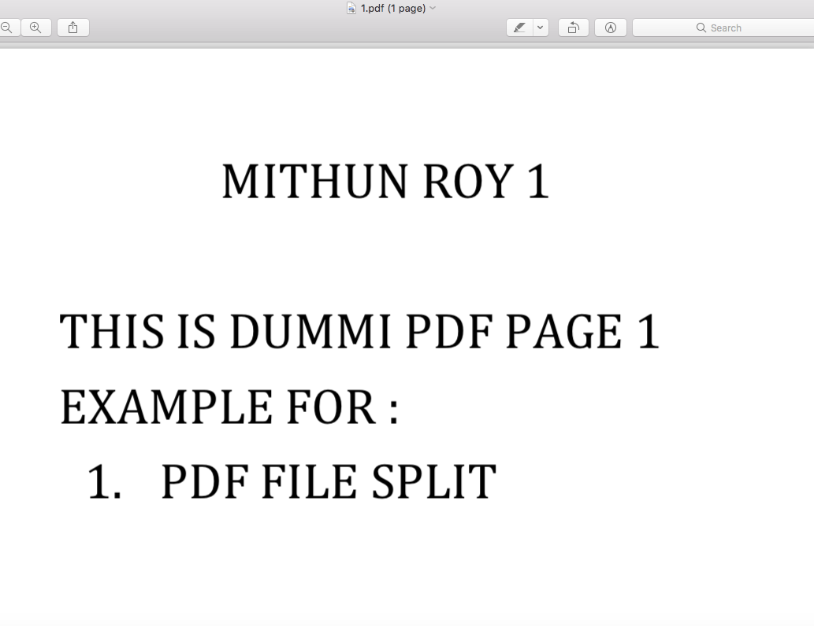
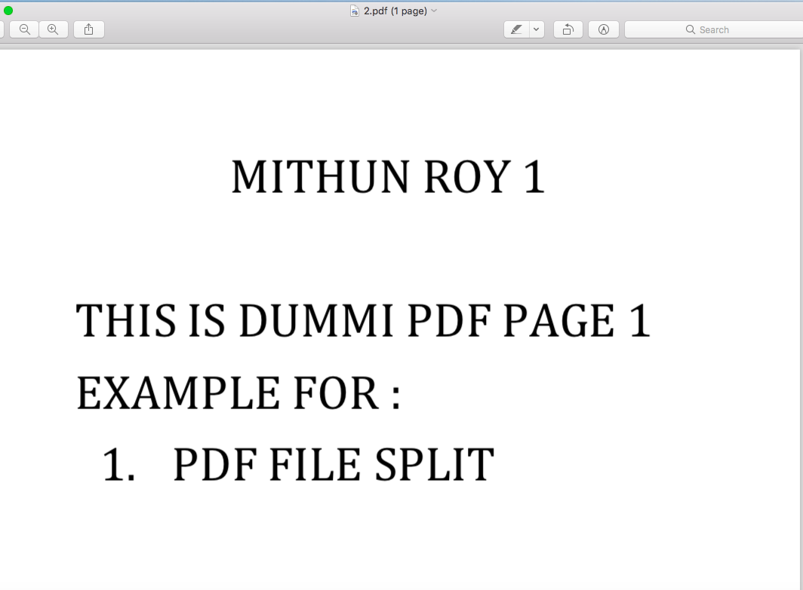
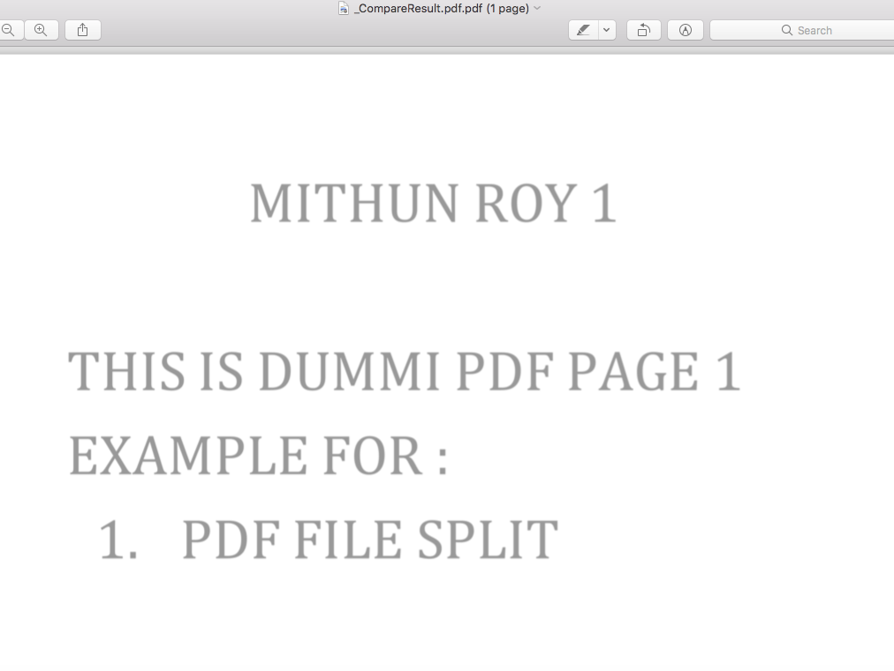
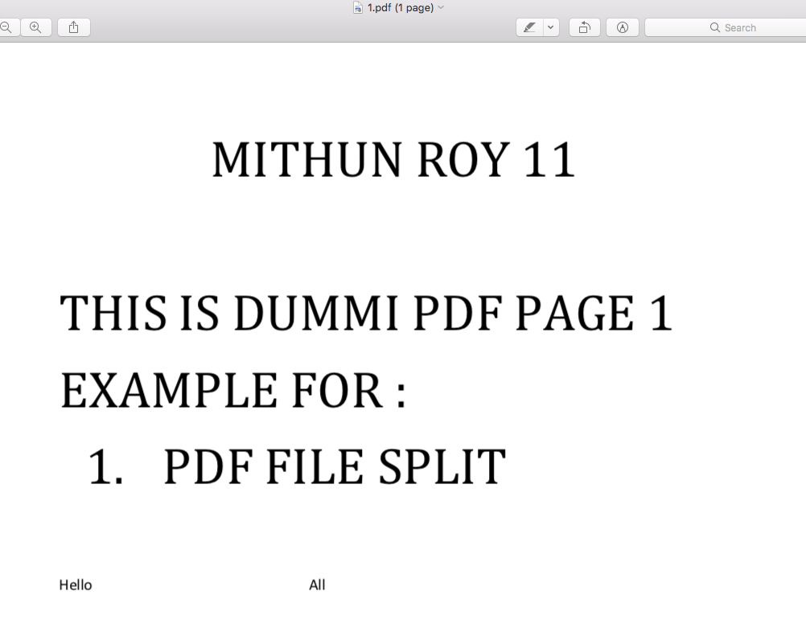
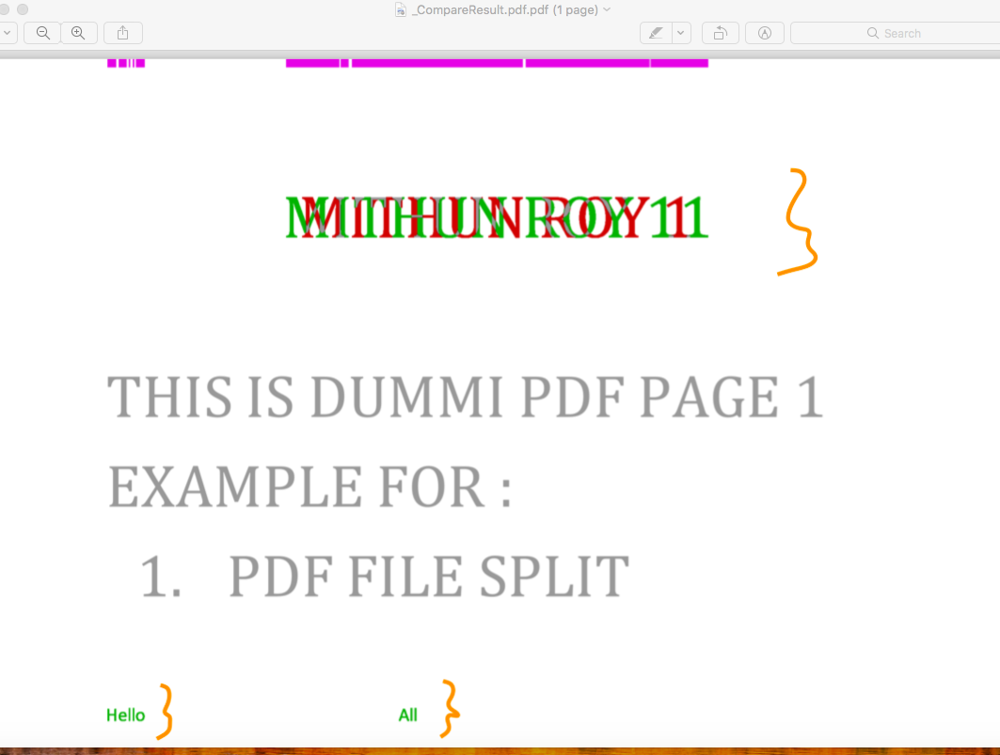

Comparing Two PDF Files Visually , Where Assuming Both Are Identical
This is my PDF 1

This is my PDF 2

Both have same content and we are comparing it.
Below code is comparing 1.pdf and 1.pdf and generating report as 'CompareResult.pdf'
package pdfcompare;
import java.io.File;
import java.io.IOException;
import de.redsix.pdfcompare.PdfComparator;
public class ComparePDFVisually {
public static void main(String args[]) throws Exception {
ComparePDFVisually obj = new ComparePDFVisually();
obj.CompareTwoPDFVisually();
}
public void CompareTwoPDFVisually(){
boolean isEquals = false;
// Compare the PDF Visually
try
{
File file1 = new File("/Users/path/Downloads/MithunPDF/1.pdf");
File file2 = new File("/Users/path/Downloads/MithunPDF/2.pdf");
try {
isEquals = new PdfComparator(file1, file2)
.compare()
.writeTo("/Users/path/Downloads/MithunPDF/"+"_"+"CompareResult" + ".pdf");
//comparedreport = download_path+getXMLData("ComparePDFResult")+"CompareResult.pdf";
} catch (IOException e) {
// TODO Auto-generated catch block
e.printStackTrace();
}
if (!isEquals) {
System.out.println("Differences found!");
}
if (isEquals) {
System.out.println("Differences not found!");
}
}
catch(
Exception e)
{
}
}
}
After PDF Compare , report is generated and shown as below

Comparing Two PDF Files Visually , Where Assuming Both Are NOT Identical
This is my PDF 1
This is my PDF 2

Both have same content and we are comparing it.
Same above code is comparing 1.pdf and 1.pdf and generating report as 'CompareResult.pdf'
This time we have a difference >> Please fine the report screenshot below
